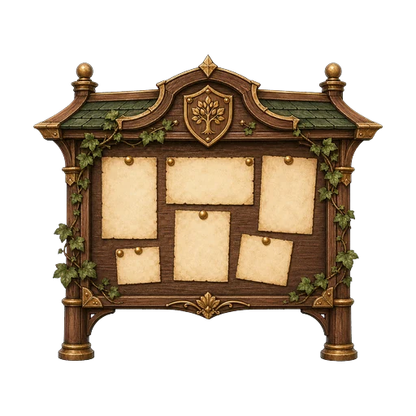

Lantern lighting begins at dusk
The bridge crew will light the west path first so visitors leaving the market can cross before the evening mist settles.
Town Green Bulletin
Announcements, gatherings, neighborly requests, and useful directions from the village notice board.
Pinned this morning
The bridge crew will light the west path first so visitors leaving the market can cross before the evening mist settles.
Bring difficult forms, confusing letters, half-finished plans, or anything that would benefit from another careful reader.
Three extra chairs and one long bench would help the supper table stay flexible for late arrivals.

Nothing is pinned under this category right now. Switch back to all notices or pin a fresh note for neighbors.
Neighborly asks
The afternoon rain reached the bench cushions before anyone noticed.
A visiting aunt prefers spoken directions to map marks.
One small crate needs to move from the west shed to the bridge.
Use clear names, useful times, and enough context that the next person can help without guessing.